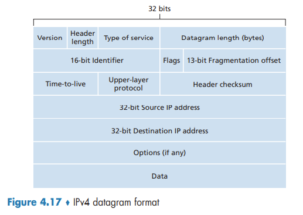
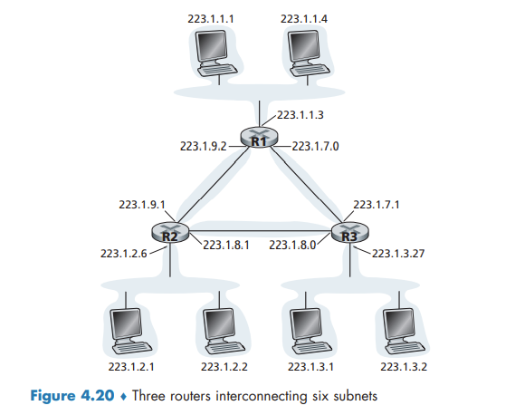
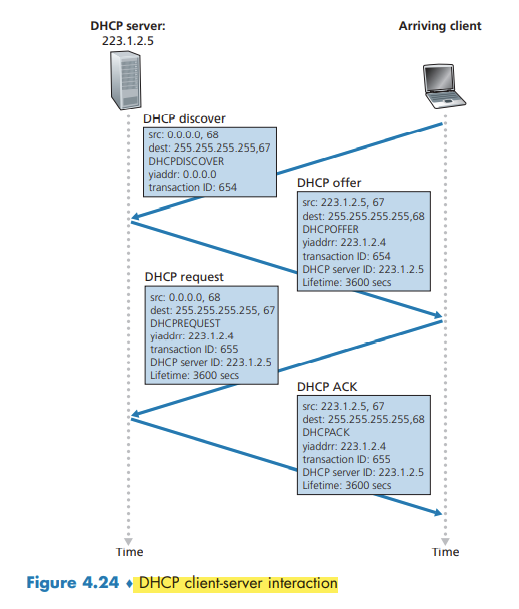
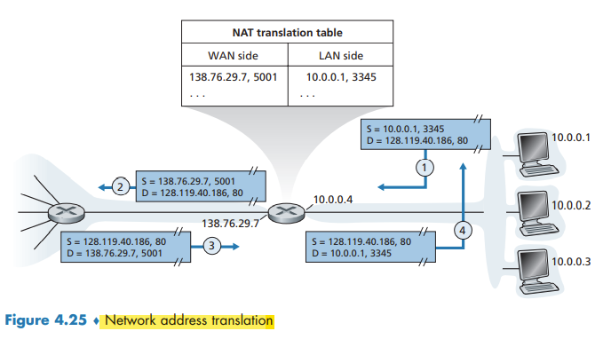
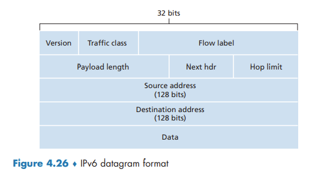

The Internet Protocol IP IPv4 Addressing IPv6 and More.html## The Internet Protocol (IP): IPv4, Addressing, IPv6, and More
IPv4 Datagram Format
If the TTL field reaches 0, a router must drop that datagram.
The protocol number is the glue that binds the network and transport layers together, whereas the port number is the glue that binds the transport and application layers together.
Since some datagrams may require options processing and others may not, the amount of time needed to process an IP datagram at a router can vary greatly.

IPv4 Addressing
A router thus has multiple interfaces, one for each of its links. Because every host and router is capable of sending and receiving IP datagrams, IP requires each host and router interface to have its own IP address. Thus, an IP address is technically associated with an interface, rather than with the host or router containing that interface.
IP addressing assigns an address to this subnet: 223.1.1.0/24, where the /24 (“slash-24”) notation, sometimes known as a subnet mask, indicates that the leftmost 24 bits of the 32-bit quantity define the subnet address.
To determine the subnets, detach each interface from its host or router, creating islands of isolated networks, with interfaces terminating the end points of the isolated networks. Each of these isolated networks is called a subnet.

The x most significant bits of an address of the form a.b.c.d/x constitute the network portion of the IP address, and are often referred to as the prefix (or network prefix) of the address.
These lower-order bits may (or may not) have an additional subnetting structure, such as that discussed above.
Obtaining a Block of Addresses
IP addresses are managed under the authority of the Internet Corporation for Assigned Names and Numbers (ICANN)
Obtaining a Host Address: The Dynamic Host Configuration Protocol
DHCP allows a host to obtain (be allocated) an IP address automatically.
DHCP is a client-server protocol. A client is typically a newly arriving host wanting to obtain network configuration information, including an IP address for itself. In the simplest case, each subnet will have a DHCP server. If no server is present on the subnet, a DHCP relay agent (typically a router) that knows the address of a DHCP server for that network is needed.
For a newly arriving host, the DHCP protocol is a four-step process.
- DHCP server discovery. The client broadcasts a DHCPDISCOVER message on the network subnet.
- DHCP server offer(s). The DHCP server reserves an IP address for the client and makes a lease offer by sending a DHCPOFFER message to the client.
- DHCP request. In response to the DHCP offer, the client replies with a DHCPREQUEST message, broadcast to the server, requesting the offered address.
- DHCP ACK. This packet includes the lease duration and any other configuration information that the client might have requested.
Since a new IP address is obtained from DHCP each time a node connects to a new subnet, a TCP connection to a remote application cannot be maintained as a mobile node moves between subnets.

Network Address Translation (NAT)
The NAT-enabled router does not look like a router to the outside world. Instead the NAT router behaves to the outside world as a single device with a single IP address.

The trick is to use a NAT translation table at the NAT router, and to include port numbers as well as IP addresses in the table entries.
IPv6
IPv6 Datagram Format
The most important changes introduced in IPv6 are evident in the datagram format:
- Expanded addressing capabilities.
- A streamlined 40-byte header.
- Flow labeling.

several fields appearing in the IPv4 datagram are no longer present in the IPv6 datagram:
- Fragmentation/reassembly.
- Header checksum.
- Options.
Transitioning from IPv4 to IPv6
With tunneling, the IPv6 node on the sending side of the tunnel takes the entire IPv6 datagram and puts it in the data (payload) field of an IPv4 datagram.